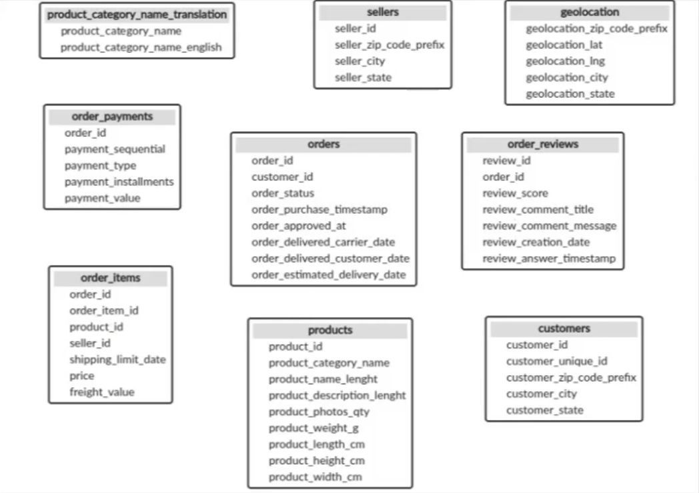
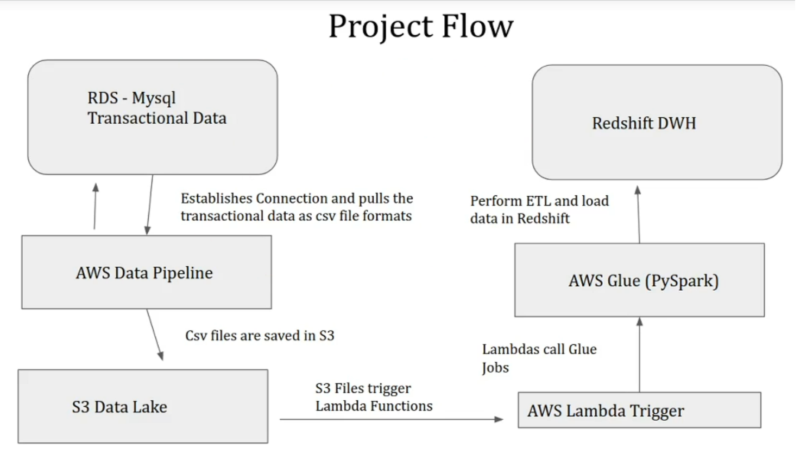
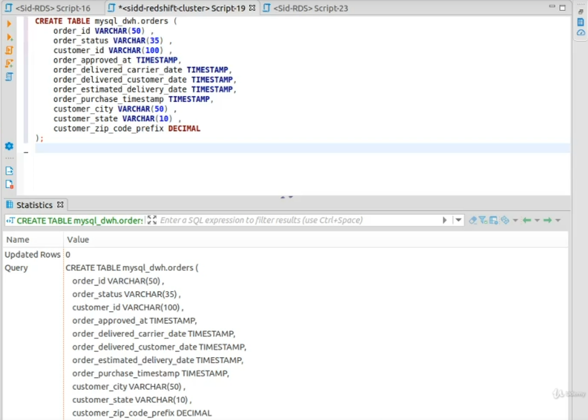
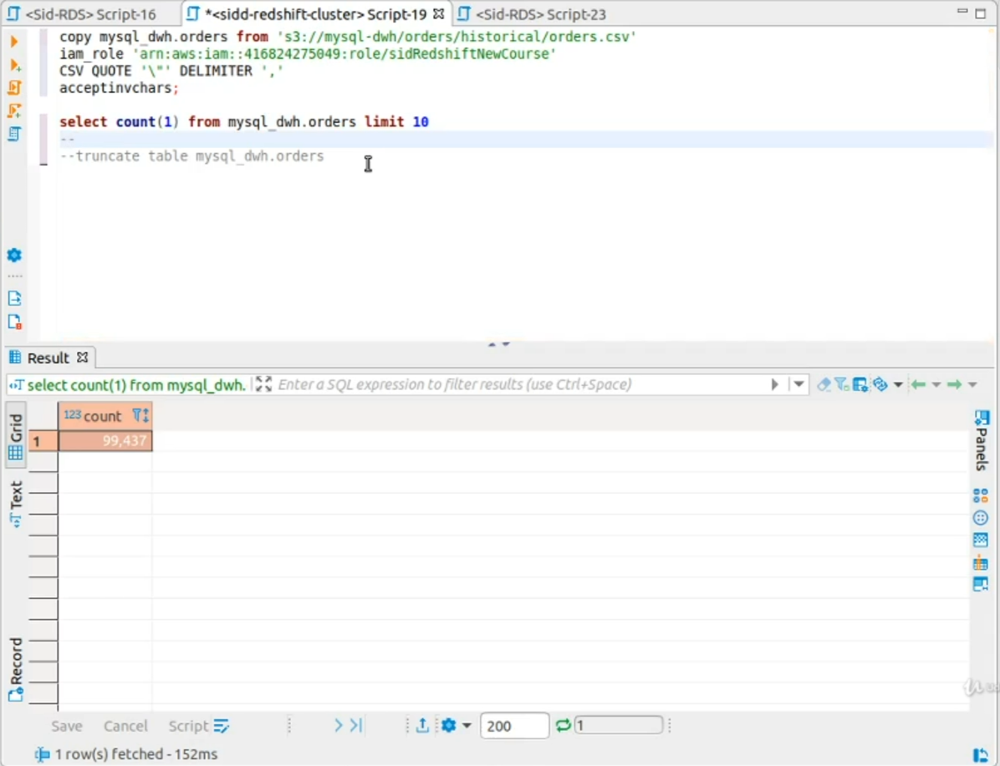
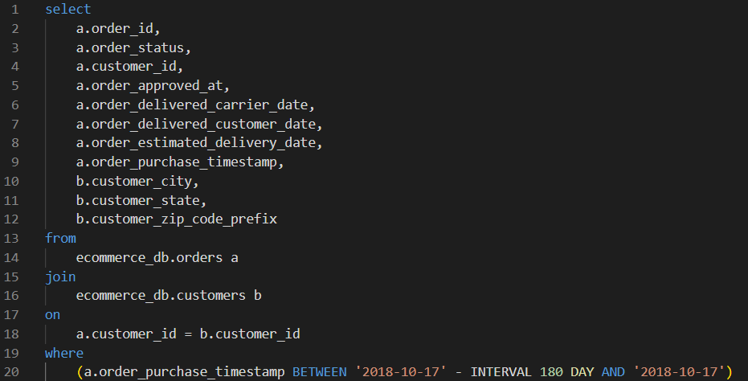
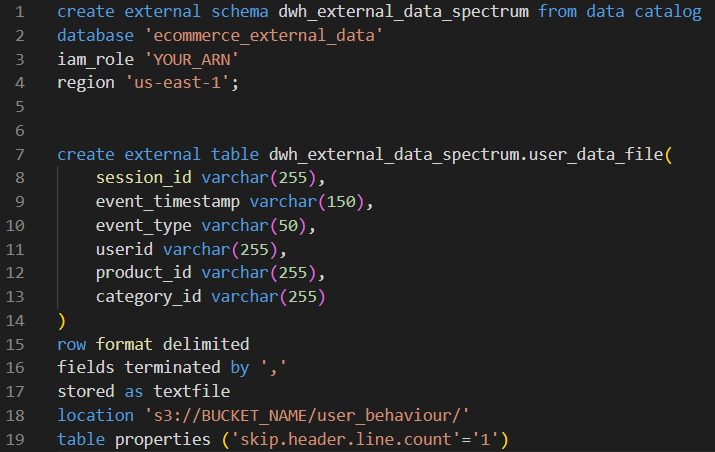
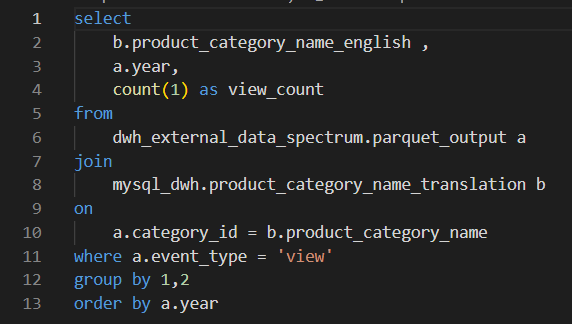
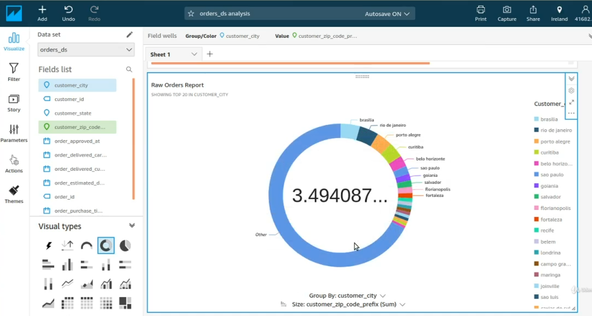

Ecommerce Redshift
Data Warehouse
The objective of this project was to learn about syncinc transactional data with data within a redshift datawarehouse, and data from external sources for enrichment
Project Overview
- Ecommerce company with a MySQL DB in AWS RDS
- Sync the data from MySQL transactional system into Redshift Data Warehouse
- Capture the external data from other sources i.e. user behavior data, click streams, etc. Transform and centralize the data into a single infrastructure
- Generate reports/KPIs and metrics for decision making, machin learning, and analysis.
- Redshift DWF
- AWS Glue (Pyspark)
- AWS Glue (Python)
- AWS Athena
- AWS Data Pipeline
- Redshift Spectrum
- QuickSight for Reporting/BI
Setup
The first step was to set up a MySQL RDS Database and configure
all the network settings to allow it to be accessible to Dbeaver.
Then I imported a database using a SQL file, and
the schema for the tables within this database can be seen below:

Next, I loaded data into the tables in the RDS database.
Lastly for the setup I created a redshift cluster and connected to it using Dbeaver.
ETL and Syncing Transactional Data with Redshift Data Warehouse
Project Flow

AWS Data Pipeline Import Job
I created an AWS Data Pipeline called "Import_Orders_Historical" using a "Full copy of RDS MySQL to S3" template. I set the run schedule to "on pipeline activation" Since this pipeline will be ran once. After this pipeline was ran an S3 bucket was created with the designated location and csv file that will be loaded into redshift.One-time Load Historical Data into Redshift Tables using Copy Command
I used commands to create a table in redshift with the schema needed to match the csv file previously mentioned, then used the COPY command to load that csv data into the table.

Glue Setup
I created a new IAM role called sidGlueRedshift and created a successful connection from AWS Glue to Redshift.Setup our first Hourly Jobs for Incremental Data Loads
I created a new pipeline in AWS data pipeline called import_orders_hourly and set it to run hourly. This pipeline has the same template as the full load created earlier. I then used the following SQL Query in the pipeline to make sure only the last 180 days are incrementally loaded into S3.
First Python Shell Job for incremental Data loads into Redshift
I created a python shell job for AWS glue that would incrementally load the orders table into redshift which can be seen below:import boto3,json
from pg import DB
secret_name = 'your-secret-name'
region_name ='us-east-1'
session = boto3.session.Session()
client = session.client(service_name='secretsmanager',region_name=region_name)
get_secret_value_response = client.get_secret_value(SecretId=secret_name)
creds = json.loads(get_secret_value_response['SecretString'])
username = creds['username']
password = creds['password']
host = creds['host']
db = DB(dbname='dev',host=host,port=5439,user=username,passwd=password)
merge_qry = """
begin ;
copy mysql_dwh_staging.orders from 's3://bucket-name/orders/current/orders.csv'
iam_role 'YOUR_ARN'
CSV QUOTE '\"' DELIMITER ','
acceptinvchars;
delete
from
mysql_dwh.orders
using mysql_dwh_staging.orders
where mysql_dwh.orders.order_id = mysql_dwh_staging.orders.order_id ;
insert into mysql_dwh.orders select * from mysql_dwh_staging.orders;
truncate table mysql_dwh_staging.orders;
end ;
"""
result = db.query(merge_qry)
print(result)
First Python Shell Job for incremental Data loads into Redshift
I created a new lambda function called "trigger_orders_hourly" and the associated roles necessary for it to run properly. I added a trigger to the lambda function with an "All object create events" Event type. I set the optional prefix to orders/current/ and the suffix to orders.csv.import boto3,json
def lambda_handler(event, context):
client = boto3.client("glue")
client.start_job_run(
JobName = 'glue_import_orders_hourly',
Arguments = {}
)
return {
'statusCode': 200,
'body': json.dumps('glue_import_orders_hourly triggered')
}
Data Lake
Now that the ETL has been created to sync the transacational data with tables in the data warehouse, We can move on to the data lake. This project still needs some data enrichment and data centralization.The data that will be used for enrichment is User Behavior/Funnel data. Some additional external sources will be used which are structured and semi-structred.
For this section the used components will be:
- AWS Glue Crawlers
- AWS Athena
- AWS Glue PySpark
- Redshift Spectrum (For Data Centralisation)
AWS Glue Crawler Setup
A new crawler is created called "user_behavior_crawler" for a database called ecommerce_external_data. I set the crawler to ignore schema changes. This crawler get the schema of a csv file called funnel_data.csv.AWS Athena Data and Table Scan
I connected the database created in the previous step with Aws Data Catalog as the source to AWS Athena. I queried the data in Athena for testing and it was successful in scanning the data.AWS Glue Pyspark - Parquet File Format & Snappy Compression
I wrote a pyspark job to convert the files within an S3 bucket to parquet and to apply snappy compression to them. This will help them take up less space in the S3 bucket and allow for much better performance in most cases when being queried directly by Amazon Athena!from pyspark.context import SparkContext,SparkConf
from pyspark.sql import SQLContext
from pyspark.sql import functions as f
from awsglue.utils import getResolvedOptions
from awsglue.context import GlueContext
from awsglue.job import Job
import sys
# args = getResolvedOptions(sys.argv, ['TempDir','JOB_NAME'])
args = getResolvedOptions(sys.argv, ['TempDir','JOB_NAME','file_name'])
file_name = args['file_name']
conf = SparkConf()
conf.set("spark.sql.parquet.compression.codec","snappy")
conf.set("spark.sql.parquet.writeLegacyFormat","true")
output_dir_path = "s3://bucket-name/parquet_output"
sc = SparkContext()
glueContext = GlueContext(sc)
spark = glueContext.spark_session
job = Job(glueContext)
job.init(args['JOB_NAME'], args)
input_file_path = "s3://bucket-name/user_behaviour/"+file_name
df = spark.read.option("header","true")\
.option("inferSchema","true")\
.option("quote","\"")\
.option("escape","\"").csv(input_file_path)
df = df.withColumn('event_timestamp',f.to_timestamp('event_timestamp',format='MM/dd/yyyy HH:mm'))
df= df.withColumn('year',f.year(f.col('event_timestamp')))\
.withColumn('month',f.month(f.col('event_timestamp')))
df.write.partitionBy(['year','month']).mode('append').format('parquet').save(output_dir_path)
AWS Lambda to Trigger Glue Jobs
Assuming there is a third party application user behavior data into an S3 bucket every hour. We can write a lambda function to send the filename as a parameter to an AWS glue job to perform the transformations on that specific file as it is written into the S3 bucket. An example of said lambda function can be seen below!import boto3
def lambda_handler(event, context):
client = boto3.client("glue")
file_key = event['Records'][0]['s3']['object']['key'].split("/")[1]
client.start_job_run(
JobName = 'Funnel_data_etl_pyspark',
Arguments = {
'--file_name':file_key
}
)
return {
'statusCode': 200,
'body': json.dumps('Funnel_data_etl_pyspark triggered')
}
Amazon Redshift
I created an external schema for redshift to parse through data that's not within the clusters. This let data from my glue data catalogs to be readable from redshift. I then created a table within my data catalog by querying redshift. The SQL commands for this can be seen here:
(Usually i would only create external tables like this for small amounts of data
and or when I need to use joins)
Redshift Spectrum | Cross Database Joins
Example showing the joining of data across internal and external sources.
Quicksight
AWS allows you to connect many different data sources from AWS services to AWS Quicksight. Quicksight allows you to create visualizations and dashboards using dimensions and measures.Connecting with Redshift and Create Dashboards/Analyses
